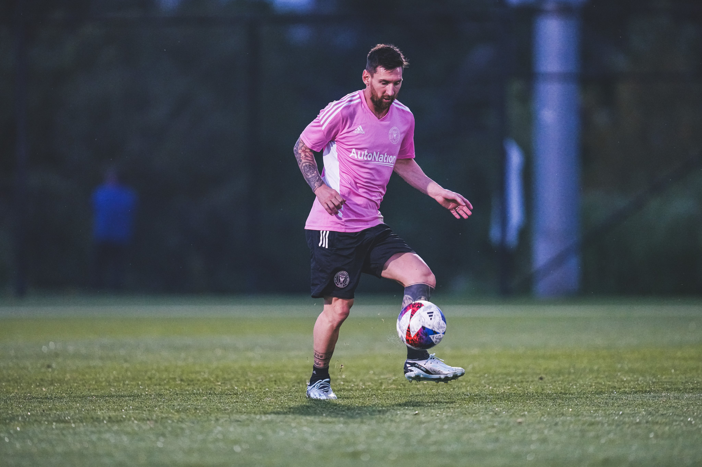

About me
Hey there, I'm a passionate videographer who has a love for creative ideas and web development. I am very into designing websites and other stuff. I am a big soccer fan and my favorite player is Lionel Messi. He is the best soccer player in history and there might be no other player that can reach the same level as him for a few decades. He holds the 1st position in most goals and assist ratio, staggering at a whopping 105 goals and assists in the 2011-2012 season, and most top players nowadays combined only score less than 50. I love watching and playing soccer because it helps me relax and chill after a long day.
Another part of me loves tech and video games. I'm a big fan of new tech launches and video games. I'm always watching what's new and I love to compare specs. I love cameras, servers, PCs, phones, and more. My favorite tech YouTuber is Marques Brownlee aka MKBHD. He reviews a variety of cool tech products.
My favorite motto is YOLO - Ben Zimmer